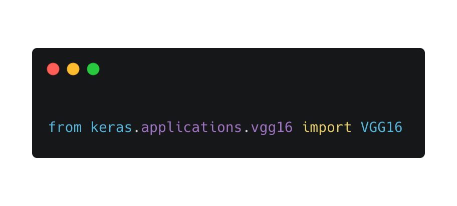
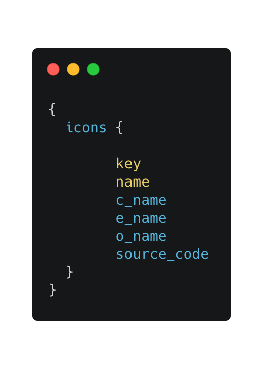
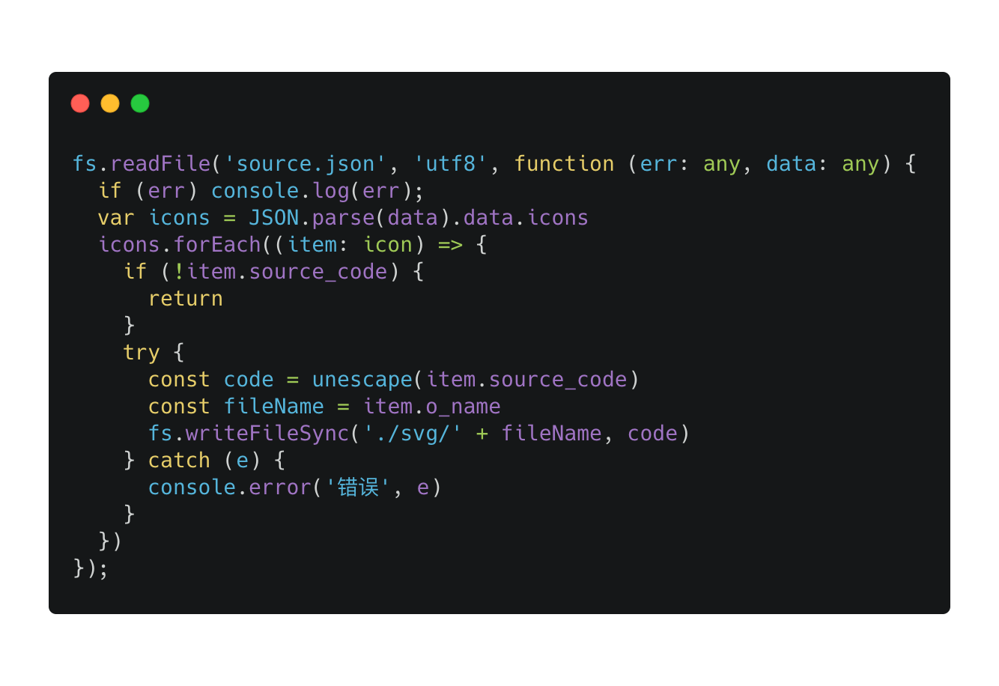
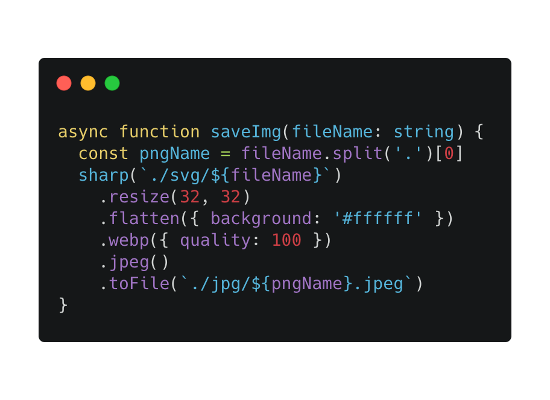
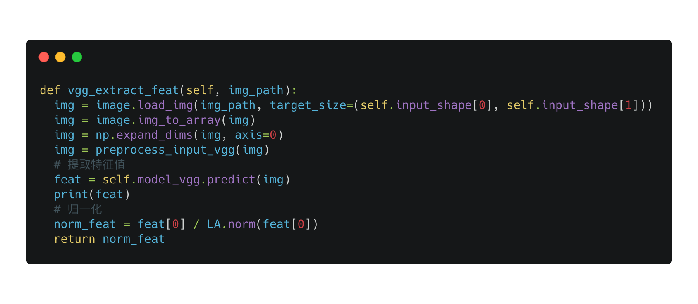
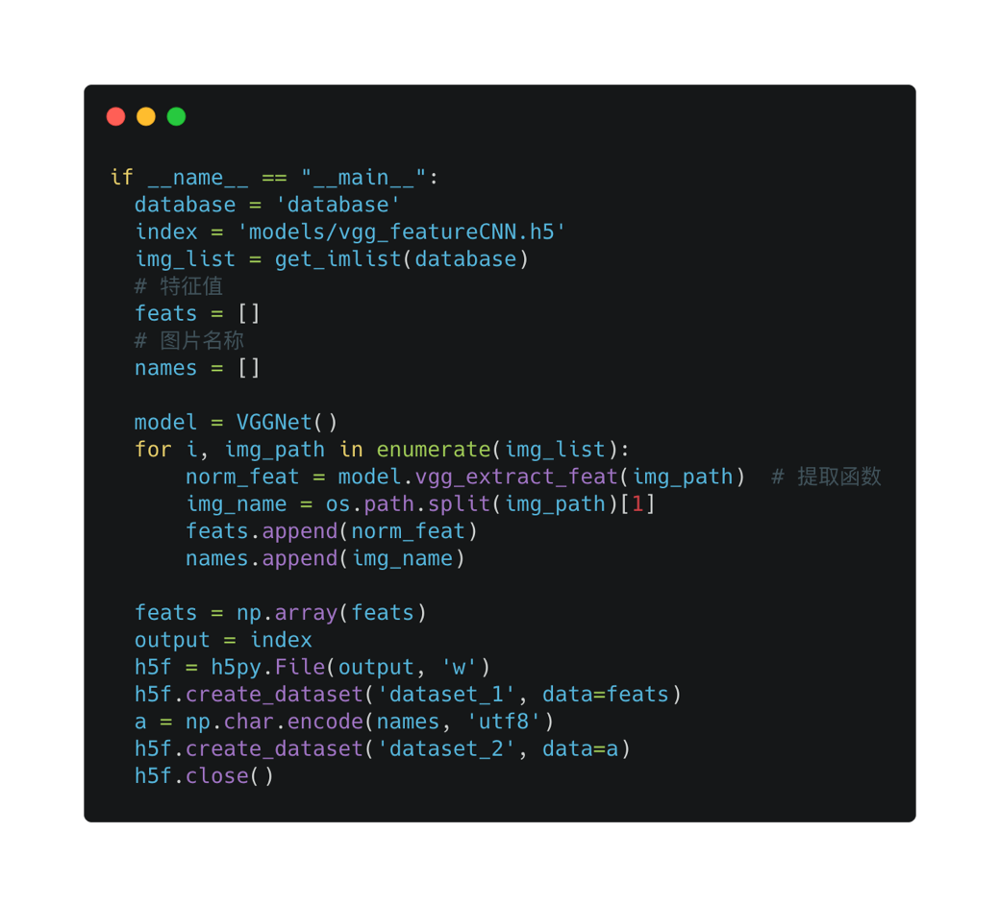
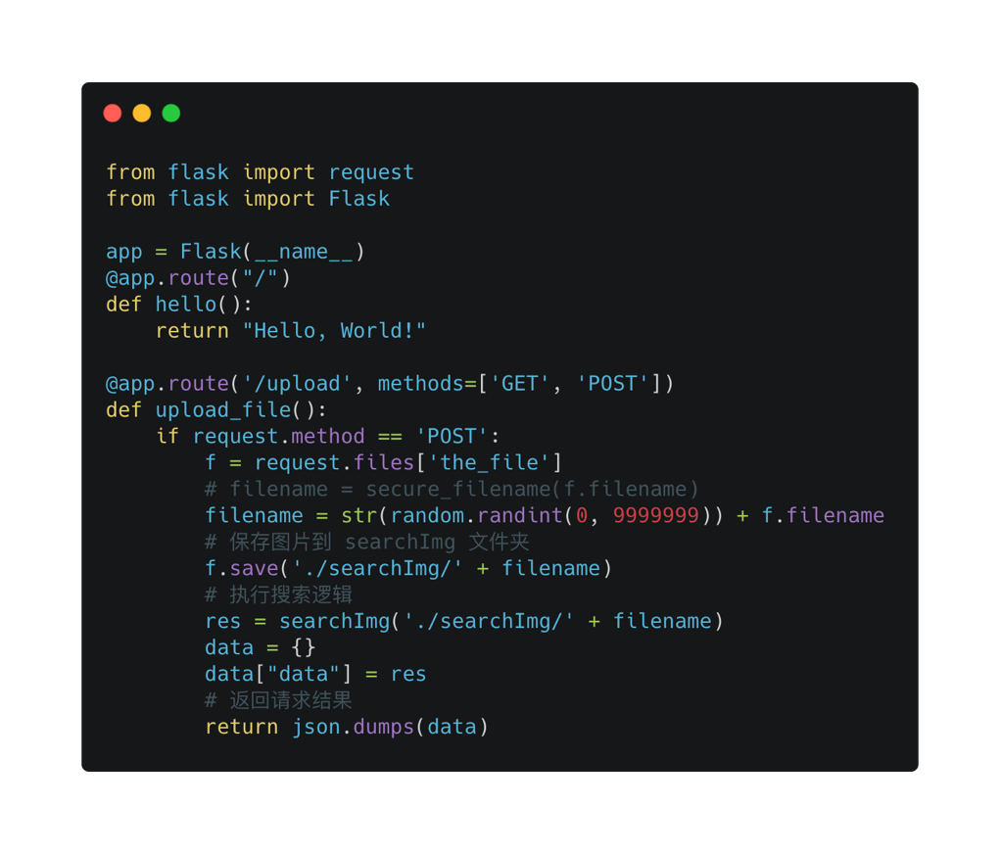
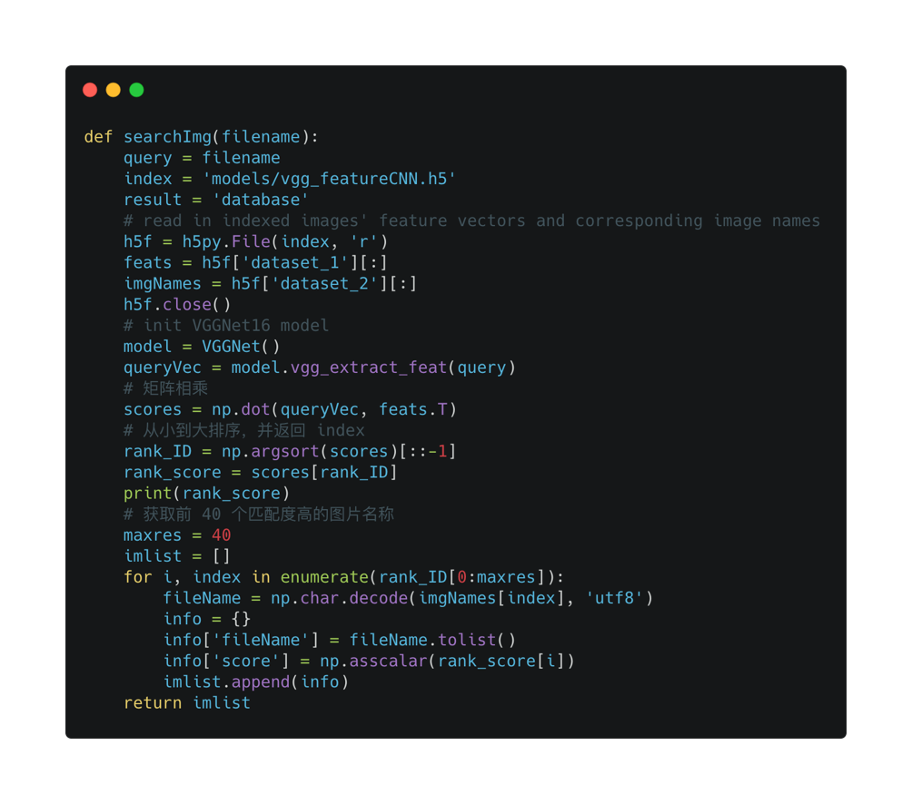
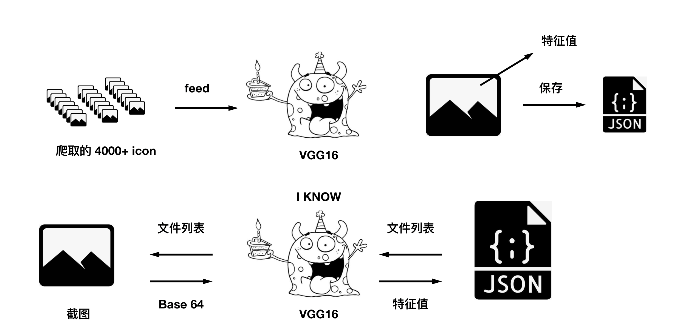

以图搜图的实现
nodejs python keras
前言
在过去的三个月中，做了一个比较有意思的项目：ICON 网站。
在这个过程中实现了简单的以图搜图，这里整理下实现流程
以图搜图的实现流程
以图搜图这个服务，简单来说就是用户截一张图，上传给后台，后台返回和图匹配度比较高的 icon 列表。核心功能点是用卷积神经网络实现的，也就是近几年特别火的 tensorflow。听起来很高大上，其实仅仅作为应用的话，我们可以使用它提供的高级 api keras，还是比较好实现的，因为官网有详细的教程，网上有不少的案例可以参考。
图片数据收集流程
什么是 vgg16
要解释 vgg16 有点困难，需要的前置知识有点多，所以在这里简单的描述下它，它其实就是一个深度学习模型，预先内置在 keras 包中，所以你 下载keras 后，用 python 就可以直接引入它了。
如果想了解更多关于
vgg16的知识，我推荐你看这篇文章:https://www.sohu.com/a/241338315_787107

为什么要使用 vgg16 呢？因为机器学习是建立在海量数据的基础上的，如果我们从头学习的话，将耗费大量计算力和精力。因为有 vgg16 这种预学习模型的存在，我们可以将训练好的数据，运用在我们自定义的数据上。
先把 vgg16 放在一边，接下来要做的，是爬取到所有的图片
生成图片样本
我们内网图标库的接口是 graphql，所以爬取所有 svg 图标，不是一个很难的事情。
graphql 的 query 这样写就行了，等个几分钟就可以拿到所有 icon json 数据了。然后我将 数据存在了本地文件 source.json 里面。

拿到 json 数据后，如何转换成图片呢，json 数据的值有一个 source_code 字段，这个字段就是 svg 代码。

之后，将 svg 转为 jpeg 图片，就可以作为样本给 vgg16 使用了。
这里我用了 sharp 库，它可以很方便的将 svg 转为其他格式的图片，并且我调整了图片的大小，固定为 32 px，方便后期的图片匹配。

提取特征值
代码核心来自于 keras 官网，主要的方法就是 model_vgg.predict，提取输入图片路径的特征值。

让我们看看提取的特征值是什么样子吧。
1 | [0.00000000e+00 0.00000000e+00 0.00000000e+00 0.00000000e+00 |
提取出来的特征值，其实就是一个1 X n的矩阵。
保存特征值
提取特征值后，需要保存在文件里。
这里用到了 python 的一个包 h5py，你可以把它想像成本地数据库，可以用来存大数组。
创建文件并写数组

遍历图片，提取特征值，写入到 .h5 文件中。（之后读文件，将 w -> r 即可。）

现在我们已经有了所有图片的特征值，接下来要做的就是写以图搜图服务了，先启动一个服务吧。
图片搜索服务流程
起一个 python http 服务
这里使用了 Flask 框架，可以看到它非常快速且简单，当用户 post upload 接口，并带上搜索的图片时，将图片保存在本地文件，并执行搜索逻辑。

搜索方法
当拿到用户的搜索图片时，第一步当然是获取该图片的特征值，和之前一样，使用封装好的提取方法。
queryVec = model.vgg_extract_feat(query)
拿到特征值之后怎么办呢？我们该如何从 h5 文件中，找到与其相似度较高的图片对象呢？
先读取 h5 文件吧。
h5f = h5py.File('models/vgg_featureCNN.h5', 'r')
还记得之前我们说提取的特征值是一个矩阵吗，特征值相似就演变成了矩阵相似，假设我们矩阵
A：[.9,0,.9,0]。
试着分别对其他两个不同的矩阵做乘积[.9,0,.9,0] x [.9,0,.9,.9] = 1.62[.9,0,.9,0] x [0,.9,0,.9] = 0
事实上，乘积的结果大小，就是匹配度大小。所以前一个矩阵就比后一个矩阵更相似 A（很拗口）
通过 python 的 np 包，可以计算两个矩阵的乘积。
np.dot(mix1, mix2)，之后将乘积从大到小排序就可以拿到 特征值匹配度较高的图片了。

以上就是整个以图搜图的实现流程。
通俗的讲一遍整个流程吧

将 vgg16 想象成一只怪物，它的特异功能就是识别每张图片的特征值，比如这张图片里边有猫，那张图片里面有狗，然后我给它看了 4000+ 多张图片，它把每张图片的特征值保存了下来，当我再给他一张时，它告诉我特征值，然后我用特征值和保存下来的列表做对比，匹配度高的就是我要找的图片。
是不是很简单呢～